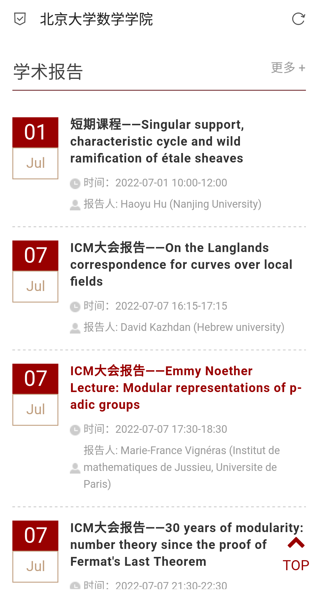

详与略
当一种东西做久以后，就会十分的无聊呢！学习也是、小说也是、游戏也是、漫画也是，热情总是周期性的，这可能是个人的原因，但拜其所赐，人只会渐渐变成只知其祥不知其略的机器了。我十分的高傲，看不起世间的许多东西，知识永远都在进行无意义重复，最明显的例子就是数学了，“区区”微积分凭什么需要这么多版本的教程，大体内容一致、本质内容同质化，难道编排与所谓的讲解真的能改变教程的本质吗？好好想想就知道，都是资本在作祟，因为还有很多深层次的知识没有任何愿意来讲的书籍，原因很简单，受众小，市场小，除非是某些基金赞助的项目。
最近闲得慌，还是得干点什么，于是真正地玩起了单片机，简单来说就是更加深入地去了解计算机底层的东西，重要的是实际操作。很幸运的是正好有这样的一个机会，随便写一堆虚伪的大话，很轻松地拿到一块开发板

这是拿来做物联网的，当然我没有任何经历，它那所谓拿来考察能力的问卷真是毫无作用呢！嘛嘛，既然板子都拿来了就随便玩玩吧，实际上是有一个任务的，完不成的话就把板子寄回去而已。那么，该怎么调教这块板子呢？首先是学习资料，物联网的统一标准很少，基本都是各厂家各自为政，能依靠的只有高中学到的那些物理知识和平常反汇编所得的底层机制参考了。平常反汇编使用的CPU指令集是复杂指令集，而现在的开发板使用的是精简指令集RISC-V。而且物联网使用的操作系统与linux不同是适用于物联网场景的实时操作系统。这都是什么意思呢？最开始，我也是一脸懵逼，但挑战未知就是我最喜欢做的一件事了。我们需要发动学习能力，首先锁定我们所拥有的参考资料，只有官方提供的这些
一张开发板电路图
单片机制造商官方参考
一个实例
确定所属关系，单片机或者MCU(微控制单元)是整块开发板的一部分，为什么要称其为开发板？因为最重要的MCU只是右中的一小部分，引脚的相关接线都已经连好了，我们主要做软件开发就够了。我们该从何着手呢？就是上述的实例了，例子是最好的老师，成功运行例子是开始的第一步。但我并没这么做，因为这会产生额外成本，需要购买摄像机。我本来的目的就是白嫖学习，多一点成本都会让我难受万分。所以我们决定从工程实例开始
由于开发板与开发环境都是官方提供，高度紧密贴合，连根数据线就可以通过WCH-Link部分的硬件直接完成烧录(即把程序写入硬件)，结果如下

从结果，我们来猜代码的作用，LCD_Show，顾名思义应该是在LCD屏幕上显示文字用的，但似乎LCD_W和LCD_H之类的信息没有显示出来，为什么呢？我们又注意到while上面的一句英语，不应该运行到此处。所以我们大致可以猜出，执行tos_knl_start后，系统处于中断状态，进入tos操作系统，不再执行后面的代码。将后面代码全部删除，发现没有任何问题，故猜想得证。这些都是小意思，而且LCD的驱动是官方写好的，开发起来一点也不靠近硬件，达不到我的目的，所以我开始研究一下init的相关代码
从名字上看，应该是USART的输出初始化，那USART是什么东西呢？没事，百度就行了，通用同步异步串行接发器。我们可以从名字来猜测它是什么，接发器说明这个东西有双向的输入输出，同时有同步和异步两种模式，而输出的模式是串行。我们注意到初始化的时候有一个baudrate的参数，百度一下，它表示每秒数位的个数。这样我们基本可以猜出它是什么作用了，计算机底层传输的基本通道是电流，通过高电压和低电压来模拟二进制数据，传输的方式是一条电路，也就是串行，而每秒的电信号中，我们可以拆出baudrate个二进制数据。我们发现数据发送依赖于计时器，它来表示每一比特电信号的时长，所以发现这样一句话RCC_APB2PeriphClockCmd，虽然前面一大串不懂，但后面显然是时钟命令启动(ENABLE)的意思，那前面的参数是什么意思呢？可以猜出应该是某条线路的时钟，为什么这么猜呢？我们利用芯片商的文档
搜索APB2，我们发现了一系列代号与引脚的对应关系，而它们之间的联系就是APB2。那么启动时钟表示什么呢？显然可以猜出，相当于供电了，并且电压的变化由时钟进行控制，我们发现后面还有GPIO和USART的初始化，我们可以猜出这应该相当于开关的作用。因为APB2的每个供电源都对应着好几个引脚，所以这应该是为了区分才加上去的，后面就是对接口的调参，显然十分自然地可以理解。
显然这是初始化硬件led灯的，就是亮着的几个红灯，我们可以轻松地找到5个led灯的位置
led1表示WCH-link，led5表示电源，我们能控制的是led2-4，它们与MCU的4个GPIO引脚相连，向其写入高电平即可使其亮起来。想要成功初始化，首先计时钟启动GPIOE，其次将其对应的PE2-4端口进行打开，就像代码写的那样。实际上，这些都挺好理解的，比较有趣的是LCD屏幕的驱动，所谓驱动，其实就是将电信号的相关操作封装成我们现在使用的API的相关代码。至于怎么玩，其实和命令行画画差不多，不太想说太多。将工程深入理解后，我们可以轻易地改造原始工程
效果还是可以的

总觉的空落落的，我们来说一下，一番研究后的成功吧。首先是MCU，它相当于一个小型的电脑了，有闪存来存程序，内存来充当运行内存，但它其实就是LCD屏幕下面的一小块芯片。它周围有一圈引脚，作用实际就是输出或接收电平，GPIO是扩展接口可以随便使用，而其它引脚一般会被赋予一些特殊的意义，具体可以参考芯片的文档
这和之前的开发板图不同，GPIO处于闲置状态，开发板是MCU的进一步扩展，目的是将一些繁琐的物理工作给集成起来，在开发板上，我们可以看到许多突出了的线条，那实际上就是电路，集中到了一块板上。其实整块板的核心其实只有那个比较小的MCU，其它都相当于外设，提供非逻辑和计算的相关功能，比如显示、按钮、led灯、wifi等。另一件有趣的事是wifi固件的烧录
我们添加wifi连接代码，串口输出出现了一系列的AT+，这实际是两个系统在进行串口通信。首先，这块开发板上，实际有两个系统，前者是我们基于MCU开发的，后者则是wifi模块的，为什么wifi会需要一个系统呢？注意这里的wifi模块指的是产生一个wifi热点，而不是指具有连接wifi的功能，MCU的系统也可以直接连接wifi只不过没有相应的驱动，所以就直接使用wifi模块里的连接功能，分工明确，效率更高。主要还是因为这个MCU没有提供wifi的IO接口，而且ESP-12F提供的wifi模块在现在应用更为广泛，所以直接分工来算了，一个操作系统是完全可以即连接wifi又充当热点的。
我想说的，大概就是一个学习的过程。是详与略把握的过程，MCU有如此多的引脚，有必要一个个详细去了解吗？不需要，找到我们想要的即可。电路图有必要搞清所有的过程吗？没必要，搞清主要线路即可。这并不是在偷懒，而是就算真的一点点去搞懂，如果没有用到的话，最终只会遗忘掉，和没学一样。模形式是我理解费马大定理的第一步，但我所用来学习的这本书
它给的定义实在过于详细了，后面的定理也是一样的，十分的重复，让人心生厌倦，更重要的是它定义这么多东西，实际用到的就那么几个。比如之前的一个双曲点，定义一下，给一些性质，就再也见不到了，实际用得多的就抛物点。又有的书过于直爽
一章就把人家一本书的内容给讲完了。看到挑剔的是我自己，简单来说就是，我累了，不然也不会去玩MCU来转化心情。还有让我头疼的是符号，不同书的定义有所差别
这里“权为k的α变换”和
的“S-变化”其实本质是一样的，两个自守因子j和J差一个平方，由于不存在权为奇数的模形式，所以后者直接用2k来表示权，J带着指数k，但前者为了统一，保留所有整数权k，并保存j的指数为k。后者使用S的逆变换，前者直接保留α，这是由于抛物点到i∞的变化和反变换的过程，前者在性质上看起来顺眼，后者在定义上看起来顺眼。之所以看这么多版本的书，主要还是因为与模形式相关的书不多。国内数学的研究还主要还集中于应用方面，纯数学也是研究流形及其周边。以北大最近的学术报告来代表一下
第一个我来翻译一下，单支撑集、特征圈，这两个是拓扑学的东西，平展层上的强分歧，这个是代数几何的东西，拓扑学是基本所有学科的基础，所以重点在于后半部分。古典代数几何研究的是零点集，基于希尔伯特零点定理，而现代的代数几何使用了概形和层的观点。我认为其属于流形的周边，现在主要研究解析流形，其相当于拓扑流形局部欧式化后赋予解析结构，而代数几何研究的对象是可以视为拓扑流形的。两者的关系有点像微积分和代数运算的感觉，但研究的都是数。第二个是Langlands纲领的东西，标题看不出东西，要看摘要，研究的是模空间的自守形式。这样看好像与我现在学的东西相关，但旁边的Hebrew 大学不是国内的。第三个是p进群的模表示，虽然带了一个模，但其实属于群表示论的内容，但模形式的相关证明需要用到，也属于我正在学的东西，但看名字就知道不是中国人。第四个是费马大定理以来的数论。最后一个是Fano流形上的Kähler-Ricci流，显然是微分流形的东西。
从这一系列的报告也知道了一件事，费马大定理的证明到底有多重要，本来如果费马大定理2000年前没有被证明的话，应该会入选7大千禧难题的，而千禧难题有两个都是与代数几何相关的。值得注意的是模形式应该是代数几何的一种工具，就好像微积分一样。感觉越说越乱了，给数学的理论划界限也不是什么值得赞赏的事，像代数几何和微分流形基本都夹杂着很多思想和基本数学理论在里面。我一直主张，知道其实质的内容比知道其名字重要多了，我可不想成为一个名词机器。这实际引出了最近“详与略”选择的问题，对于近代数学概念实在太多，仔细阅读难免被淹没会感到乏味，抽象代数和点集拓扑是我以前学习的典型代表，比如抽象代数里的环可以引出整环、主理想整环、唯一析因子环、诺特环、戴德金环等各种玩意，点集拓扑里的紧集可以引出局部紧、可数紧、聚点紧、序列紧、仿紧等，不过说到底紧集不就是闭区间的类似物嘛，真正地理解紧性还是从复平面添加无穷原点进行紧化，又或者构造射影空间才开始渐渐理解其用途。我大概又到了重复地低迷期了，也该从细读向略读进行转化了，再在后面应用的时候回来精读，这应该是个好的选择。自己怎么想，我还是很清楚的，跳读也不是什么丢脸的事，反而有利于迅速地把握全局，有人可能会认为这样子基础不牢，但牢固的基础拿来干嘛呢，很久以前，我就已经决定了，在数学上，我只想做一个读者。